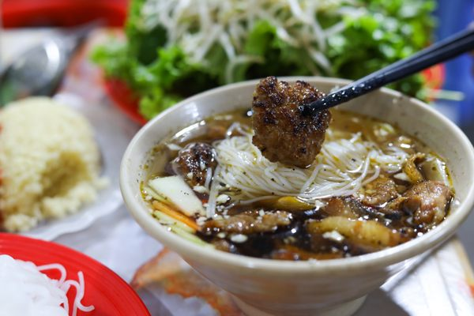
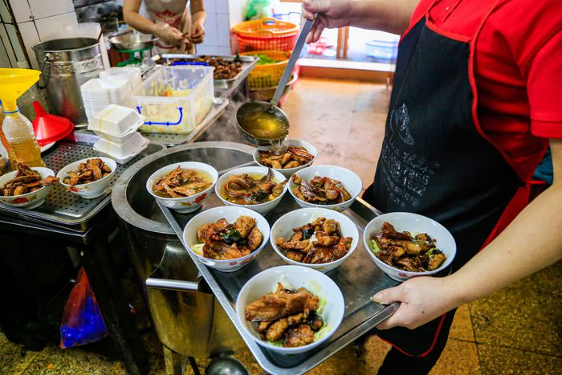
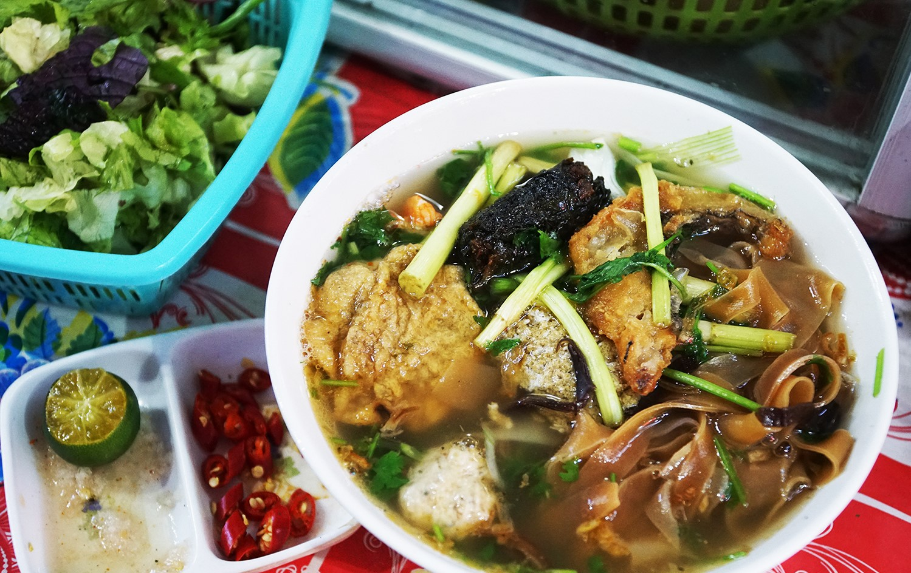
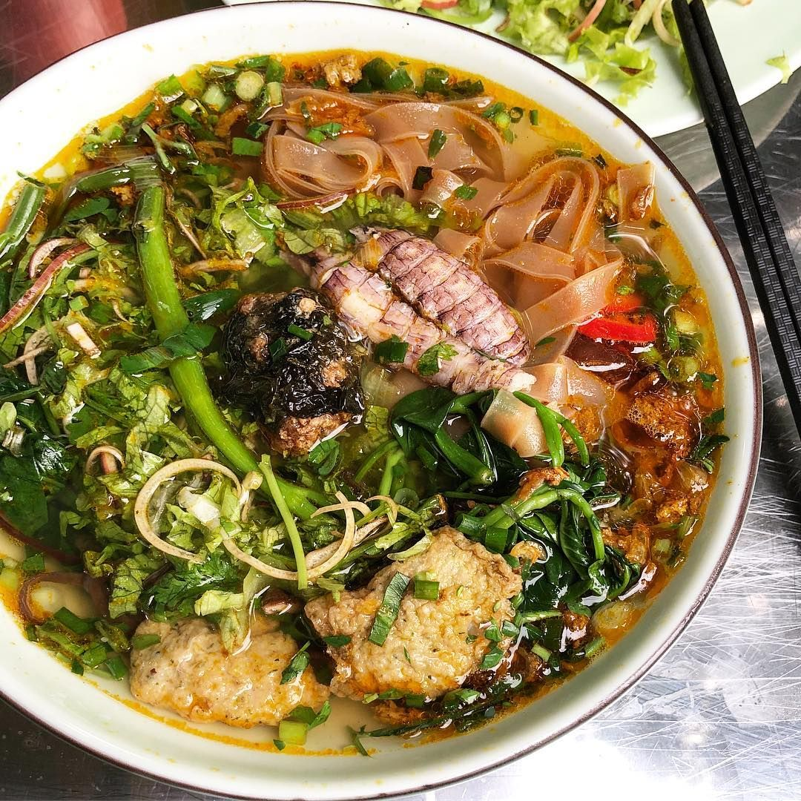
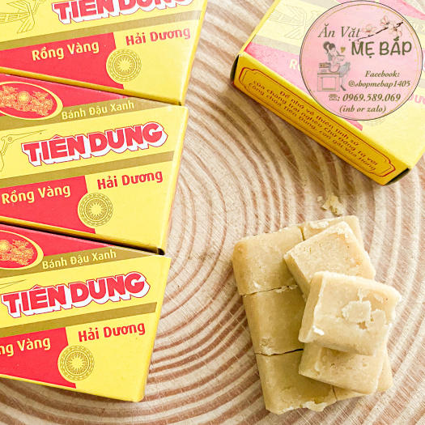
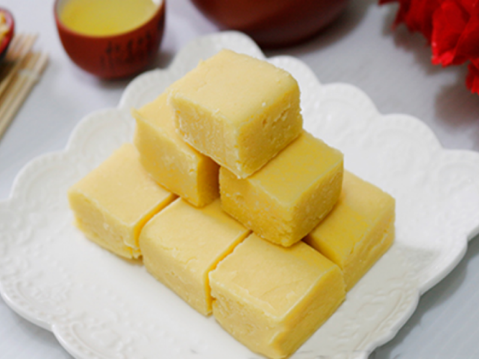

Ẩm thực miền Bắc mang đậm nét truyền thống lâu đời của dân tộc Việt Nam. Hương vị đặc trưng là sự thanh nhẹ, tinh tế và hài hòa. Người miền Bắc chú trọng giữ nguyên vị tự nhiên của nguyên liệu, không quá cay, không quá ngọt nhưng vẫn đậm đà và sâu lắng.
Những món ăn nơi đây thường giản dị trong cách trình bày nhưng cầu kỳ trong chế biến. Chính sự tinh tế ấy đã tạo nên một phong cách ẩm thực riêng biệt, góp phần làm nên bản sắc văn hóa của vùng đất phía Bắc.


Bún chả được xem là một trong những tinh hoa làm nên danh tiếng ẩm thực của thủ đô. Linh hồn của món ăn nằm ở những viên chả thịt lợn băm mềm mọng và từng miếng ba chỉ thái lát được nướng trên than hoa đỏ lửa, xém cạnh vàng ruộm và dậy mùi thơm hấp dẫn.
Thịt nướng được đặt trong bát nước chấm chua ngọt pha vừa vặn, kèm đu đủ xanh ngâm giòn. Khi thưởng thức, thực khách gắp bún tươi, chả và rau sống nhúng vào nước chấm, tạo nên hương vị hài hòa, đậm đà và khó quên.
Một số địa điểm nổi tiếng: Bún chả Hương Liên, Bún chả Hàng Quạt, Bún chả Sinh Từ,...


Nhắc đến Hải Phòng là nhớ đến món bánh đa cua trứ danh. Sợi bánh đa nâu đỏ dai mềm hòa quyện trong nước dùng nấu từ cua đồng ngọt thanh, điểm thêm riêu cua béo ngậy và gạch cua thơm lừng.
Tô bánh đa cua đầy đủ còn có chả lá lốt, đậu phụ rán vàng, rau muống xanh mát và hành phi thơm nức. Tất cả tạo nên một bản hòa vị dân dã nhưng khó quên, mang đậm hương vị miền biển.
Địa điểm nổi tiếng: Bánh đa cua Bà Cụ, Bánh đa cua 26 Kỳ Đồng, Bánh đa cua Lạch Tray, Bánh đa cua Cô Cẩm,...


Bánh đậu xanh Hải Dương là đặc sản truyền thống nổi tiếng, thường được chọn làm quà biếu mỗi khi đi xa về. Món bánh này từng được vua Bảo Đại khen thưởng và nổi danh với thương hiệu “Rồng Vàng”.
Bánh được làm từ đậu xanh nguyên chất rang chín, nghiền mịn rồi trộn cùng đường và một lượng mỡ vừa đủ. Khi thưởng thức, bánh tan ngay trong miệng, để lại vị ngọt thanh dịu và hương thơm tự nhiên.
Thương hiệu lâu đời: Nguyên Hương, Hòa An, Tiên Dung, Bảo Hiên Rồng Vàng,...